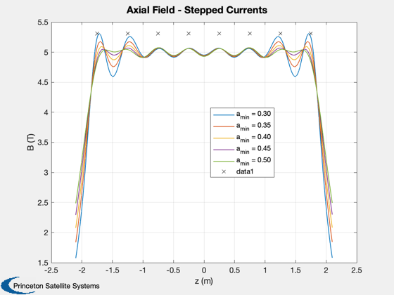
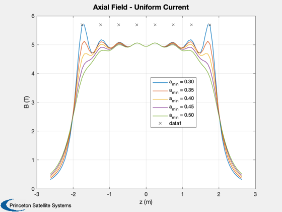
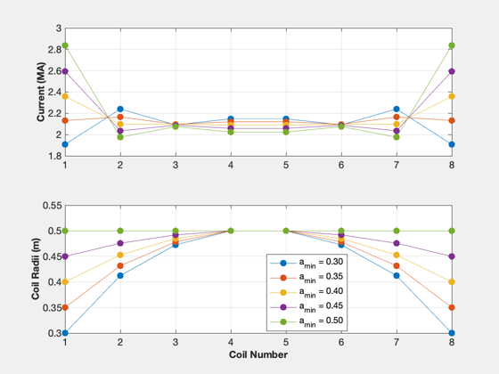
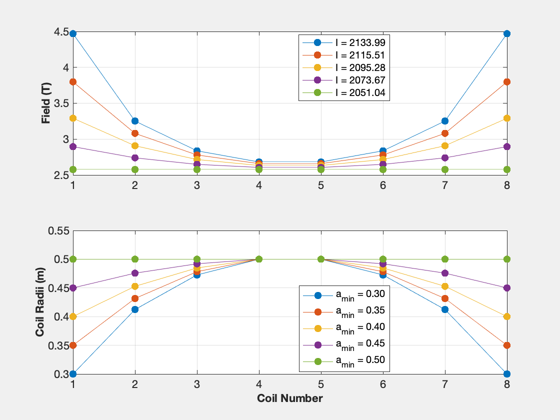

Contents
Coil currents design study
Calculate the radii for an ellipsoidal solenoid and calculate the currents to maintain a desired average field. This is compared to a uniform current in the same coils.
Note: for a 4 m long PFRC, 16 magnets produce a much more uniform field. 8 magnets are more suitable for a 2 m long PFRC.
See also: EllipsoidalSolenoid, ConcentricCoils, PFRCSolenoid
%-------------------------------------------------------------------------- % Copyright (c) 2016 Princeton Satellite Systems, Inc. % All rights reserved. %-------------------------------------------------------------------------- % Taper the coil following an ellipsoid and calculate currents to create a % nearly constant axial field zC = [-1.75 -1.25 -0.75 -0.25 0.25 0.75 1.25 1.75]; bAve = 5; n = length(zC); aMin = [0.3 0.35 0.4 0.45 0.5]; m = length(aMin); b = zeros(m,500); i = zeros(m,n); a = zeros(m,n); s = {}; for k = 1:m a(k,:) = EllipsoidalSolenoid( aMin(k), 0.5, zC ); [b(k,:),i(k,:),z] = ConcentricCoils( zC, bAve, a(k,:) ); s{k} = sprintf('a_{min} = %4.2f',aMin(k)); end ll = {}; IT = []; B = []; for k = 1:m a(k,:) = EllipsoidalSolenoid( aMin(k), 0.5, zC ); gamma = 1; [IT(k,:),~,~,B(k,:),zs] = PFRCSolenoid(a(k,:),gamma,bAve); bm(k,:) = FieldCurrentLoop( a(k,:), IT(k,:), 0 ); ll{k} = sprintf('I = %4.2f',IT(k,1)*1e-3); end h1 = Plot2D(z,b,'z (m)', 'B (T)', 'Axial Field - Stepped Currents'); legend(s,'location','best') hold on plot(zC,max(b(:))*ones(size(zC)),'kx') h3 = Plot2D(zs,B,'z (m)', 'B (T)', 'Axial Field - Uniform Current'); legend(s,'location','best') hold on plot(zC,max(B(:))*ones(size(zC)),'kx') h2 = NewFig('Coil Radii and Stepped Currents'); subplot(2,1,1) plot(1:n,i/1e6,'.-','markersize',20); YLabelS('Current (MA)'); grid on subplot(2,1,2) plot(1:n,a,'.-','markersize',20); grid on YLabelS('Coil Radii (m)'); XLabelS('Coil Number'); legend(s,'location','best') h2 = NewFig('Coil Radii and Uniform Current'); subplot(2,1,1) plot(1:n,bm,'.-','markersize',20); YLabelS('Field (T)'); grid on legend(ll,'location','best') subplot(2,1,2) plot(1:n,a,'.-','markersize',20); grid on YLabelS('Coil Radii (m)'); XLabelS('Coil Number'); legend(s,'location','best') if 0 PrintFig(1,4,h1,'CoilB'); PrintFig(1,4,h2,'CoilAR'); end DispWithTitle(a','Coil Radius') DispWithTitle(i','Coil Current') disp(i) return
Coil Radius
0.3 0.35 0.4 0.45 0.5
0.41231 0.43157 0.45277 0.47566 0.5
0.47258 0.47828 0.48477 0.49202 0.5
0.5 0.5 0.5 0.5 0.5
0.5 0.5 0.5 0.5 0.5
0.47258 0.47828 0.48477 0.49202 0.5
0.41231 0.43157 0.45277 0.47566 0.5
0.3 0.35 0.4 0.45 0.5
Coil Current
1.9074e+06 2.1318e+06 2.3588e+06 2.5931e+06 2.8375e+06
2.2397e+06 2.1648e+06 2.0974e+06 2.035e+06 1.9752e+06
2.0902e+06 2.0964e+06 2.0947e+06 2.0869e+06 2.0744e+06
2.1477e+06 2.1198e+06 2.09e+06 2.0579e+06 2.0231e+06
2.1477e+06 2.1198e+06 2.09e+06 2.0579e+06 2.0231e+06
2.0902e+06 2.0964e+06 2.0947e+06 2.0869e+06 2.0744e+06
2.2397e+06 2.1648e+06 2.0974e+06 2.035e+06 1.9752e+06
1.9074e+06 2.1318e+06 2.3588e+06 2.5931e+06 2.8375e+06
Columns 1 through 6
1.9074e+06 2.2397e+06 2.0902e+06 2.1477e+06 2.1477e+06 2.0902e+06
2.1318e+06 2.1648e+06 2.0964e+06 2.1198e+06 2.1198e+06 2.0964e+06
2.3588e+06 2.0974e+06 2.0947e+06 2.09e+06 2.09e+06 2.0947e+06
2.5931e+06 2.035e+06 2.0869e+06 2.0579e+06 2.0579e+06 2.0869e+06
2.8375e+06 1.9752e+06 2.0744e+06 2.0231e+06 2.0231e+06 2.0744e+06
Columns 7 through 8
2.2397e+06 1.9074e+06
2.1648e+06 2.1318e+06
2.0974e+06 2.3588e+06
2.035e+06 2.5931e+06
1.9752e+06 2.8375e+06
    Compare to fixed-radii, constant-current array of current loops
This is a 2 m long array
iC = 1.5e6; aMax = 0.45; % Field of a single loop b1 = MagneticFieldCurrentLoop( iC, aMax, [0;0;0], [1;0;0;0], [0;0;0] ) % Field of the array of loops zF = [-0.9 -0.64 -0.38 -0.13 0.13 0.38 0.64 0.9]; bS = MagneticFieldCurrentLoop( iC*ones(1,8), aMax*ones(1,8), [zF;zeros(1,8);zeros(1,8)], repmat([1;0;0;0],1,8), [0;0;0] ) % Add the nozzle coils zz = linspace(-1.5,1.5,40); z2 = [zz;zeros(size(zz));zeros(size(zz))]; bN = MagneticFieldCurrentLoop( [iC*ones(1,8) 3e6*[1 1]],... [aMax*ones(1,8) 0.1*[1 1]], [[zF 1.25 -1.25];zeros(1,10);zeros(1,10)],... repmat([1;0;0;0],1,10), z2 ); Plot2D(zz,bN(1,:),'z','Bz','Axial Scan') %--------------------------------------